| dog_name | Alien | Human | Mannequin | Shapeshifter | Mean | Variance | |
|---|---|---|---|---|---|---|---|
| Milton | 8 | 7 | 1 | 6 | 5.50 | 7.25 | |
| Woofy | 9 | 5 | 2 | 5 | 5.25 | 6.19 | |
| Ramsey | 6 | 2 | 3 | 8 | 4.75 | 5.69 | |
| Mr. Snifficus III | 5 | 3 | 1 | 9 | 4.50 | 8.75 | |
| Willock | 8 | 4 | 5 | 8 | 6.25 | 3.19 | |
| The Venerable Dr. Waggy | 7 | 5 | 6 | 7 | 6.25 | 0.69 | |
| Lord Scenticle | 10 | 2 | 7 | 2 | 5.25 | 11.69 | |
| Professor Nose | 12 | 6 | 8 | 1 | 6.75 | 15.69 | |
| Mean | — | 8.12 | 4.25 | 4.12 | 5.75 | — | — |
Repeated measures designs
Andy Field
University of Sussex


|
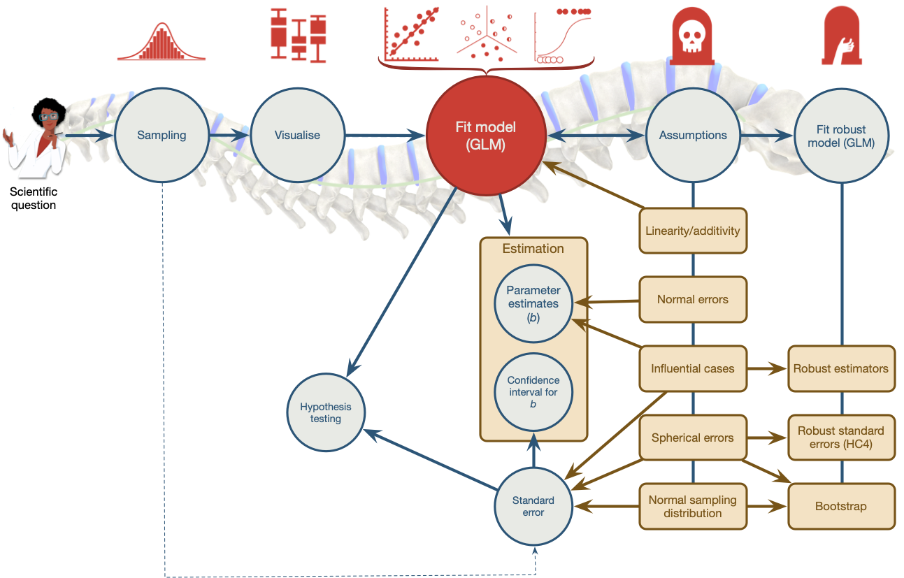

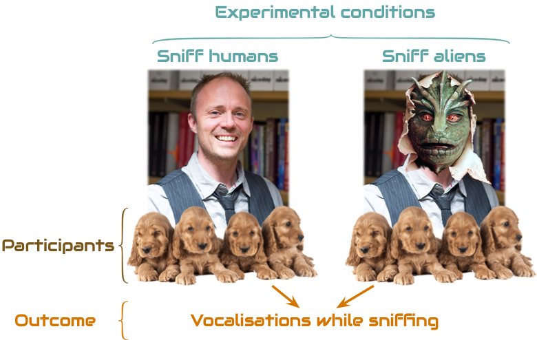
- Systematic variance: created by our manipulation
- Unsystematic variance: variance created by unknown factors
Benefits of repeated measures designs
- Sensitivity
- Unsystematic variance is reduced
- More sensitive to experimental effects
- Economy
- Less participants are needed
- But, be careful of fatigue
Can puppies sniff out aliens?
- Outcome = vocalizations during 1 min sniffing (
vocalizations) - Predictor: type of entity being sniffed (
entity)- Alien (not in humanoid form)
- Human (control for alien vs human)
- Mannequin (control for humanoid form)
- Shapeshifter (alien in humanoid form)
dog_nameindicates the name of the dog (N = 8)
The data
The data in
Repeated measures and the linear model
To keep things simple, imagine a design where dogs sniff only aliens or humans (e.g., two conditions)
\[ \begin{aligned} \text{vocalizations}_{i} & = \hat{b}_{0} + \hat{b}_{1}\text{entity}_{i} + e_{i} \end{aligned} \]
| Entity sniffed | Dummy variable (entity) |
|---|---|
| Alien | 1 |
| Human | 0 |
Same participants in all conditions
Scores across conditions correlate
Violates the assumption of independent residuals (think back to the lecture on bias)
Repeated measures: hierrachical data structure
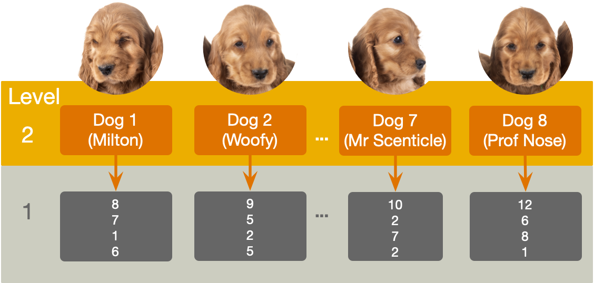
Repeated measures and the linear model
Need to adjust the model to estimate this dependency
\[ \begin{aligned} \text{vocalizations}_{ij} & = (\hat{\beta}_{0} + \hat{u}_{0j}) + (\hat{\beta}_{1} + \hat{u}_{1j})\text{entity}_{ij}+ e_{ij} \\ & = \left[\hat{\beta}_{0} + \hat{\beta}_{1}\text{entity}_{ij}\right]+ \left[\hat{u}_{0j} + \hat{u}_{1j}\text{entity}_{ij} + e_{ij}\right]\\ \end{aligned} \]
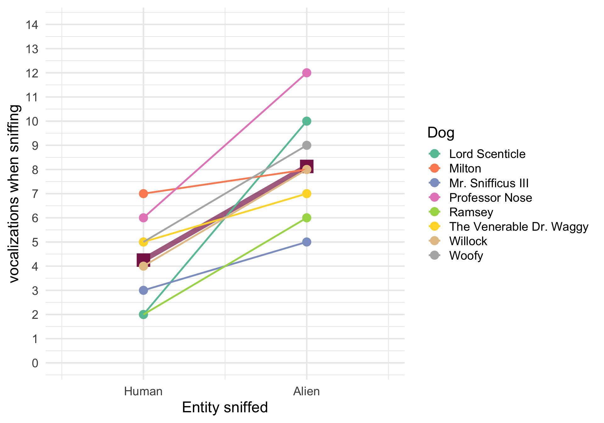
\[ \begin{aligned} \text{vocalizations}_{ij} & = (\hat{\beta}_{0} + \hat{u}_{0j})+ \hat{\beta}_{1}\text{entity}_{ij}+ e_{ij} \end{aligned} \]
\[ \begin{aligned} \text{vocalizations}_{ij} & = (\hat{\beta}_{0} + \hat{u}_{0j}) + (\hat{\beta}_{1} + \hat{u}_{1j})\text{entity}_{ij}+ e_{ij} \end{aligned} \]
Repeated measures and the linear model
Back to our actual design (with 4 conditions: Alien, Human, Mannequin, Shapeshifter)
entitywould be split into 3 dummy/contrast variables- Let’s just use default dummy coding
| Entity sniffed | Dummy 1 (Alien vs. mannequin) | Dummy 2 (Shapeshifter vs. mannequin) | Dummy 3 (Human vs. mannequin) |
|---|---|---|---|
| Alien | 1 | 0 | 0 |
| Shapeshifter | 0 | 1 | 0 |
| Human | 0 | 0 | 1 |
| Mannequin | 0 | 0 | 0 |
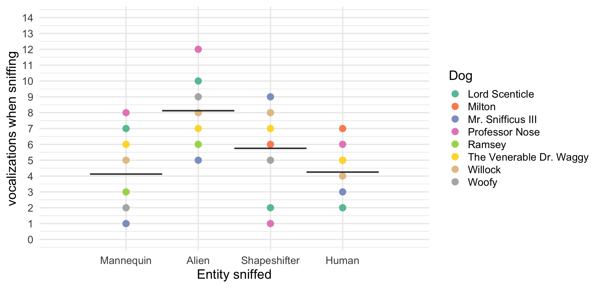
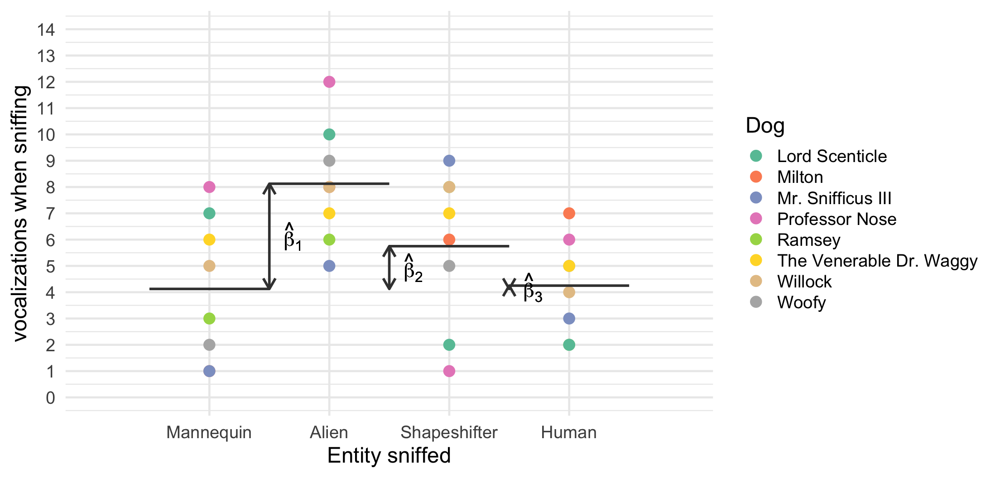
\[ \begin{aligned} \text{vocalizations}_{ij} & = \left[\hat{\beta}_{0} + \hat{\beta}_{1}\text{alien vs. manq}_{ij} + \hat{\beta}_{2}\text{shape vs. manq}_{ij} + \hat{\beta}_{3}\text{human vs. manq}_{ij}\right] \\ &\quad + \left[\hat{u}_{0j} + e_{ij}\right] \\ \end{aligned} \]
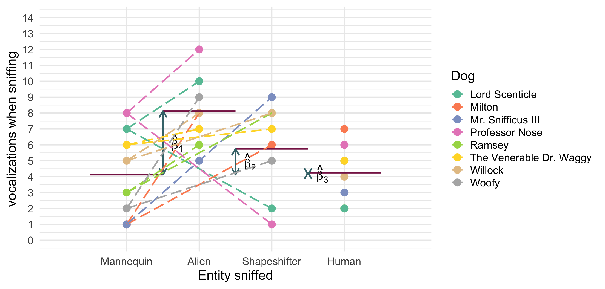
\[ \begin{aligned} \text{vocalizations}_{ij} & = \left[\hat{\beta}_{0} + \hat{\beta}_{1}\text{alien vs. manq}_{ij} + \hat{\beta}_{2}\text{shape vs. manq}_{ij} + \hat{\beta}_{3}\text{human vs. manq}_{ij}\right] \\ &\quad + \left[\hat{u}_{0j} + \hat{u}_{1j}\text{alien vs. manq}_{ij} + e_{ij}\right] \\ \end{aligned} \]
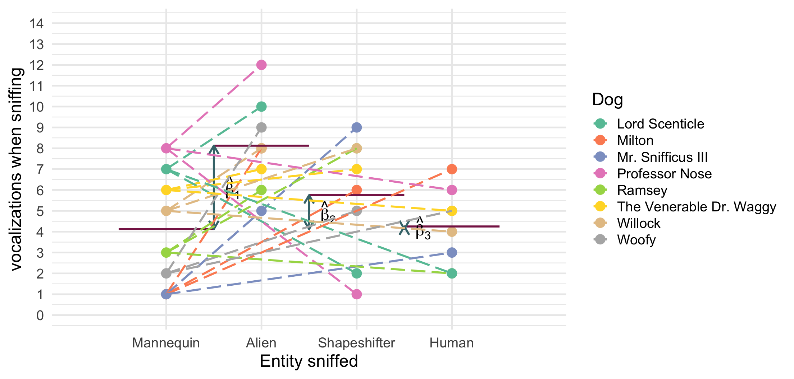
\[ \begin{aligned} \text{vocalizations}_{ij} & = \left[\hat{\beta}_{0} + \hat{\beta}_{1}\text{alien vs. manq}_{ij} + \hat{\beta}_{2}\text{shape vs. manq}_{ij} + \hat{\beta}_{3}\text{human vs. manq}_{ij}\right] \\ &\quad + \left[\hat{u}_{0j} + \hat{u}_{1j}\text{alien vs. manq}_{ij} + \hat{u}_{2j}\text{shape vs. manq}_{ij} + e_{ij}\right] \\ \end{aligned} \]
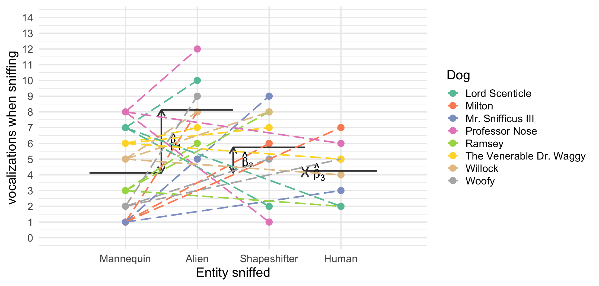
\[ \begin{aligned} \text{vocalizations}_{ij} & = \left[\hat{\beta}_{0} + \hat{\beta}_{1}\text{alien vs. manq}_{ij} + \hat{\beta}_{2}\text{shape vs. manq}_{ij} + \hat{\beta}_{3}\text{human vs. manq}_{ij}\right] \\ &\quad + \left[\hat{u}_{0j} + \hat{u}_{1j}\text{alien vs. manq}_{ij} + \hat{u}_{2j}\text{shape vs. manq}_{ij} + \hat{u}_{3j}\text{human vs. manq}_{ij} + e_{ij}\right] \\ \end{aligned} \]
Approaches to repeated measures designs
Historic: Repeated measures ANOVA (RM-ANOVA)
- Restricts the model in two ways
- Assumes effects are equivalent across participants (the effect in participant 1 is the same as in participant 2)
- Errors have compound symmetry/sphericity
- CS: The correlation between scores across conditions is the same
- Sphericity: differences between scores in pairs of conditions have the same variance
- These restrictions may be unrealistic
Multilevel modelling (MLM) approach
- Fewer restrictions: doesn’t require CS or sphericity
- MLM can include multiple hierarchical structures (e.g., observations within people, within clinics)
- MLMs can (in general) cope with missing values RM-ANOVA cannot.
- MLMs can be extended to categorical outcomes, RM-ANOVA cannot.
- Contrast coding is possible
Fitting the model
Use
lme4::lme()ornlme::lme()- A trickier but more flexible option
- Manually set contrasts
- Can get parameter estimates, diagnostic plots, and robust methods
The
afex::aov_4()functionSpecify the repeated measures with
(rm_predictors|id_var)Automatically sets contrasts
Built in interaction plot with
afex_plot()But … no parameter estimates, diagnostic plots, or robust methods
See other lecture
Contrasts
If the dog training has been successful then we’d expect sniffer dogs to make more vocalizations when sniffing alien entities than non alien-entities.
- Contrast 1: {alien, shapeshifter} vs. {human, mannequin}
We have two ‘chunks’ in contrast 1 that would then need to be decomposed:
- Contrast 2: {alien} vs. {shapeshifter}
- Contrast 3: {human} vs. {mannequin}
Using the rules for contrast coding we’d get the codes in Table 4:
| Group | Contrast 1 | Contrast 2 | Contrast 3 |
|---|---|---|---|
| Alien | 1/2 | 1/2 | 0 |
| Human | -1/2 | 0 | 1/2 |
| Mannequin | -1/2 | 0 | -1/2 |
| Shapeshifter | 1/2 | -1/2 | 0 |
Fitting the model
The model
| Name | df | df_diff | Chi2 | p |
|---|---|---|---|---|
| Null model | 3 | NA | NA | NA |
| Full model | 6 | 3 | 12.69 | 0.01 |
The entity sniffed had a significant effect on the number of vocalizations by sniffer dogs, \(\chi^2\)(3) = 12.69, p = 0.01.
Contrasts
| Parameter | Coefficient | SE | 95% CI | t(26) | p |
|---|---|---|---|---|---|
| (Intercept) | 5.56 | 0.44 | 4.67, 6.46 | 12.74 | < .001 |
| entityaliens vs non | 2.75 | 0.87 | 0.96, 4.54 | 3.15 | 0.004 |
| entityalien vs shape | 2.38 | 1.23 | -0.16, 4.91 | 1.92 | 0.065 |
| entityhuman vs manquin | 0.12 | 1.23 | -2.41, 2.66 | 0.10 | 0.920 |
Contrasts revealed that vocalizations were significantly higher when sniffing aliens compared to non-aliens, 2.75 [0.96, 4.54], t = 3.15, p = 0.004), but vocalizations were not significantly different when sniffing different types of aliens, 2.38 [-0.16, 4.91], t = 1.92, p = 0.065 or when sniffing a human compared to a mannequin, 0.12 [-2.41, 2.66], t = 0.10, p = 0.920)..
Interpretation
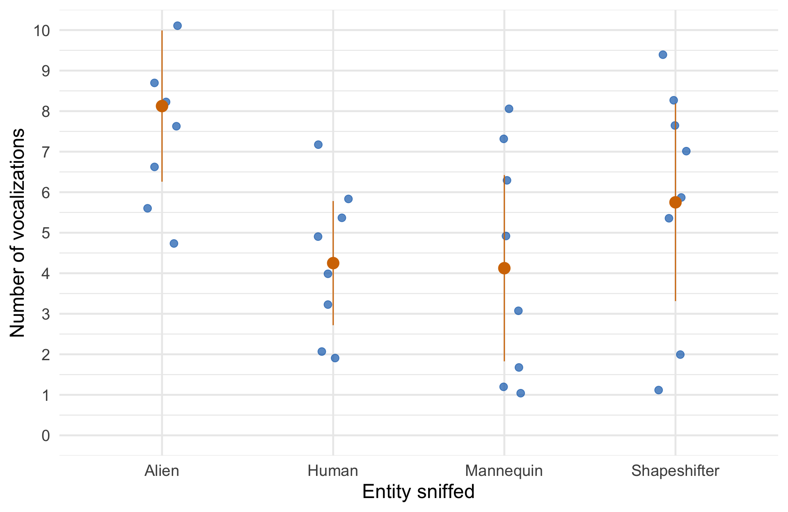
Scenting a victory … factorial repeated measures designs
Can scents distract the sniffer dogs?
- 50 sniffer dogs
- Participated in all conditions
- Sniffed 9 different ‘things’
- Predictor:
entity- Human: the dog sniffs a human
- Shapeshifter the dog sniffs an alien in humanoid form
- Alien the dog sniffs an alien in lizard form
- Predictor:
scent_mask- The entity had no masking scent (none)
- The entity was smeared with human pheromones
- The entity was smeared with fox pheromones
- Outcome: The number of
vocalizationsduring each 1 minute sniff
The model
- Let’s simplify things by ignoring the fact that
entityandscent_maskwill be represented by two dummy variables each (and the interaction by 4!) - We can model individual differences in all parameters
\[ \begin{aligned} \text{vocalizations}_{ij} &= \left[\hat{b}_{0} + \hat{b}_{1}\text{entity}_{ij} + \hat{b}_{2}\text{scent}_{ij} + \hat{b}_{3}(\text{entity}_{ij}\times\text{scent}_{ij})\right] + \\ &\quad \left[\hat{u}_{0j} + \hat{u}_{1j}\text{entity}_{ij} + \hat{u}_{2j}\text{scent}_{ij} + \hat{u}_{3j}(\text{entity}_{ij}\times\text{scent}_{ij}) + e_{ij}\right]\\ \end{aligned} \]
- This model will be too complex to fit
- The simplest version of the repeated measures model instead treats the effects of predictor variables as fixed, but acknowledges that dogs, overall, will vary in their vocalizations:
\[ \begin{aligned} \text{vocalizations}_{ij} & = \left[\hat{b}_{0} + \hat{b}_{1}\text{entity}_{ij} + \hat{b}_{2}\text{scent}_{ij} + \hat{b}_{3}(\text{entity}_{ij}\times\text{scent}_{ij})\right] +\\ &\quad \left[\hat{u}_{0j} + e_{ij}\right]\\ \end{aligned} \]
The data
The data
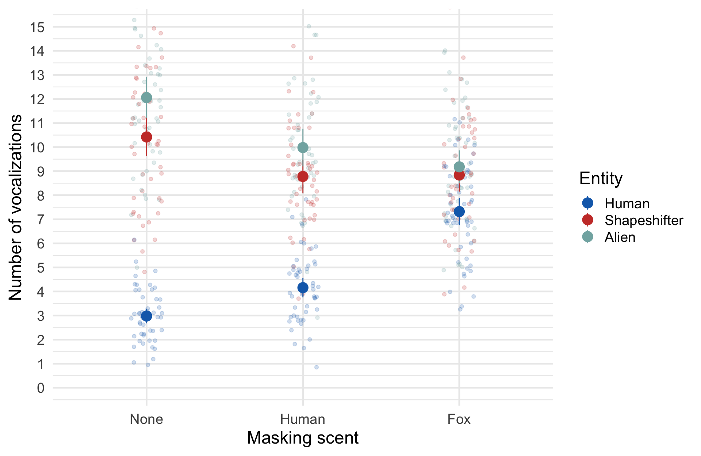
Contrasts
We have a natural control group for the entity (human) so a natural contrast is to use dummy coding.
- Contrast 1: {alien} vs. {human}
- Contrast 2: {shapeshifter} vs. {human}
We have a natural control group for the scent masks (no scent) so a natural contrast is to use dummy coding.
- Contrast 1: {human} vs. {none}
- Contrast 2: {fox} vs. {none}
Specifying contrasts
The level order of the variables is:
[1] "Human" "Shapeshifter" "Alien" [1] "None" "Human" "Fox" We can do nothing (default dummy coding will do the above) or set up contrasts explicitly with:
Building models
scent_base <- lmerTest::lmer(
vocalizations ~ 1 + (1|dog_id),
data = scent_tib
)
scent_ent <- lmerTest::lmer(
vocalizations ~ entity + (1|dog_id),
data = scent_tib
)
scent_scent <- lmerTest::lmer(
vocalizations ~ entity + scent_mask + (1|dog_id),
data = scent_tib
)
scent_int <- lmerTest::lmer(
vocalizations ~ entity + scent_mask + entity:scent_mask + (1|dog_id),
data = scent_tib
)| Name | df | df_diff | Chi2 | p |
|---|---|---|---|---|
| scent_base | 3 | NA | NA | NA |
| scent_ent | 5 | 2 | 327.43 | <.001 |
| scent_scent | 7 | 2 | 13.36 | .001 |
| scent_int | 11 | 4 | 183.79 | <.001 |
Repeat the following mantra:
“It is never sensible to interpret main effects in the presence of a significant interaction effect.”
Entity × scent_mask interaction
The interaction effect suggests that the effect of entity on vocalizations was significantly moderated by what scent the entity was wearing, \(\chi^2\)(4) = 183.79, p < .001.
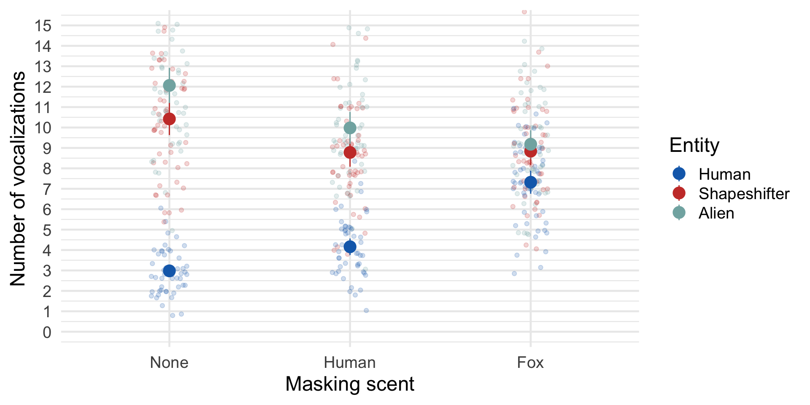
| effect | term | estimate | std.error | statistic | df | p.value |
|---|---|---|---|---|---|---|
| fixed | (Intercept) | 2.98 | 0.331 | 8.993 | 188.915 | 0.000 |
| fixed | entityShapeshifter | 7.44 | 0.360 | 20.641 | 392.000 | 0.000 |
| fixed | entityAlien | 9.08 | 0.360 | 25.191 | 392.000 | 0.000 |
| fixed | scent_maskHuman | 1.18 | 0.360 | 3.274 | 392.000 | 0.001 |
| fixed | scent_maskFox | 4.34 | 0.360 | 12.041 | 392.000 | 0.000 |
| fixed | entityShapeshifter:scent_maskHuman | -2.82 | 0.510 | -5.532 | 392.000 | 0.000 |
| fixed | entityAlien:scent_maskHuman | -3.26 | 0.510 | -6.395 | 392.000 | 0.000 |
| fixed | entityShapeshifter:scent_maskFox | -5.92 | 0.510 | -11.614 | 392.000 | 0.000 |
| fixed | entityAlien:scent_maskFox | -7.22 | 0.510 | -14.164 | 392.000 | 0.000 |
Entity × scent_mask interaction: parameter 1
| effect | term | estimate | std.error | statistic | df | p.value |
|---|---|---|---|---|---|---|
| fixed | entityShapeshifter:scent_maskHuman | -2.82 | 0.51 | -5.53 | 392 | 0 |
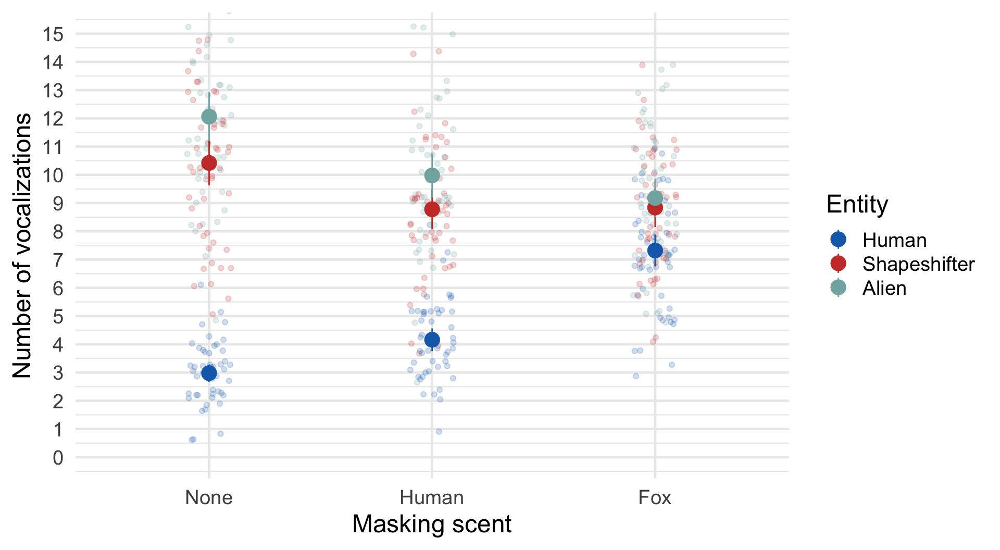
Entity × scent_mask interaction: parameter 1
| effect | term | estimate | std.error | statistic | df | p.value |
|---|---|---|---|---|---|---|
| fixed | entityShapeshifter:scent_maskHuman | -2.82 | 0.51 | -5.53 | 392 | 0 |
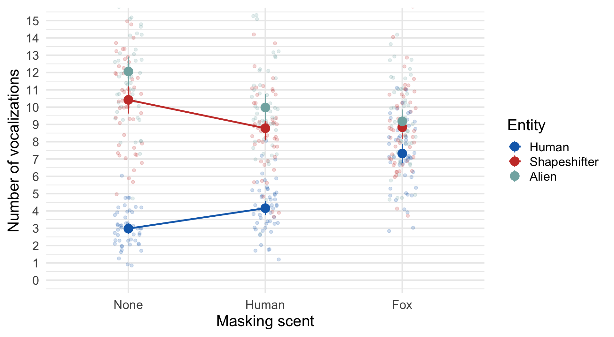
Entity × scent_mask interaction: parameter 2
| effect | term | estimate | std.error | statistic | df | p.value |
|---|---|---|---|---|---|---|
| fixed | entityAlien:scent_maskHuman | -3.26 | 0.51 | -6.4 | 392 | 0 |
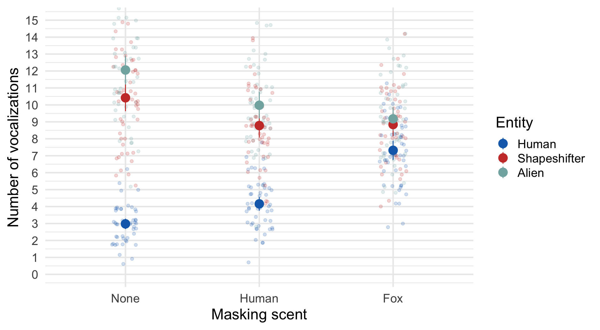
Entity × scent_mask interaction: parameter 2
| effect | term | estimate | std.error | statistic | df | p.value |
|---|---|---|---|---|---|---|
| fixed | entityAlien:scent_maskHuman | -3.26 | 0.51 | -6.4 | 392 | 0 |
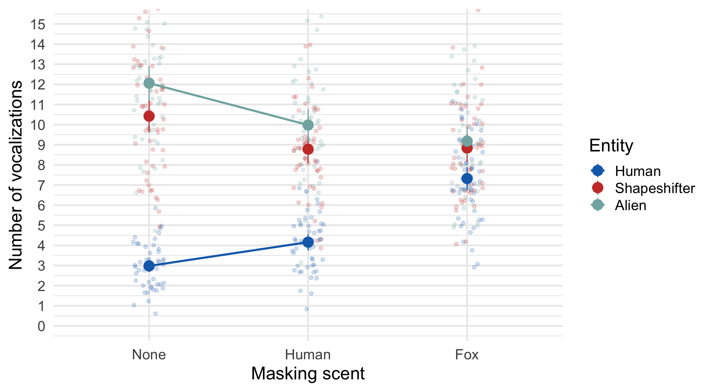
Entity × scent_mask interaction: parameter 3
| effect | term | estimate | std.error | statistic | df | p.value |
|---|---|---|---|---|---|---|
| fixed | entityShapeshifter:scent_maskFox | -5.92 | 0.51 | -11.61 | 392 | 0 |
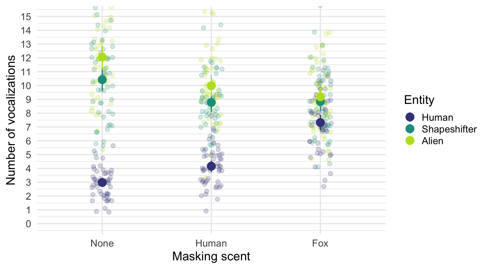
Entity × scent_mask interaction: parameter 3
| effect | term | estimate | std.error | statistic | df | p.value |
|---|---|---|---|---|---|---|
| fixed | entityShapeshifter:scent_maskFox | -5.92 | 0.51 | -11.61 | 392 | 0 |
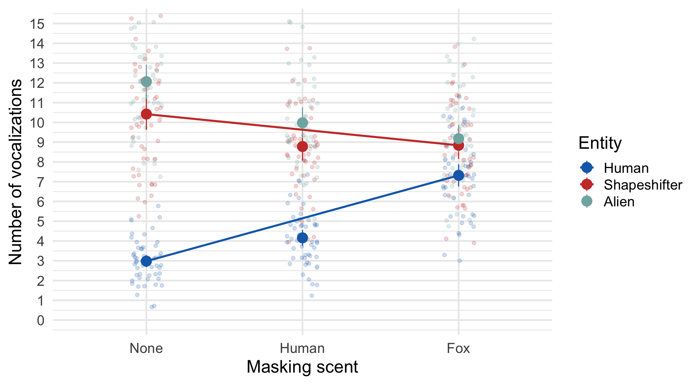
Entity × scent_mask interaction: parameter 4
| effect | term | estimate | std.error | statistic | df | p.value |
|---|---|---|---|---|---|---|
| fixed | entityAlien:scent_maskFox | -7.22 | 0.51 | -14.16 | 392 | 0 |
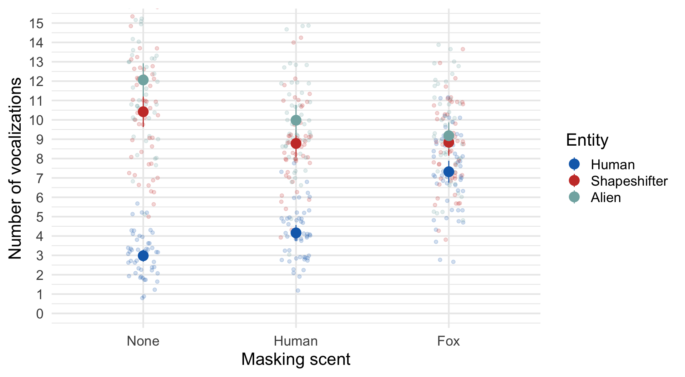
Entity × scent_mask interaction: parameter 4
| effect | term | estimate | std.error | statistic | df | p.value |
|---|---|---|---|---|---|---|
| fixed | entityAlien:scent_maskFox | -7.22 | 0.51 | -14.16 | 392 | 0 |
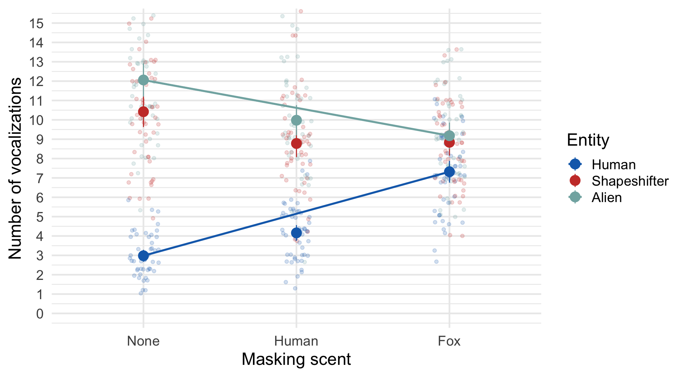